-
To Verify the fuctionalities of Customer Employment
14:08:20 PM / 32:47:618 Fail
To Verify the fuctionalities of Customer Employment
11.29.2022 14:08:20 11.29.2022 14:11:07 32:47:618 · #test-id=1PassTo verify fields when nature of employment is SalariedGiven Launch the kuls application and Navigate to Application details view liststepdefinitions.HooksClass.addScreenshot(io.cucumber.java.Scenario)screenshot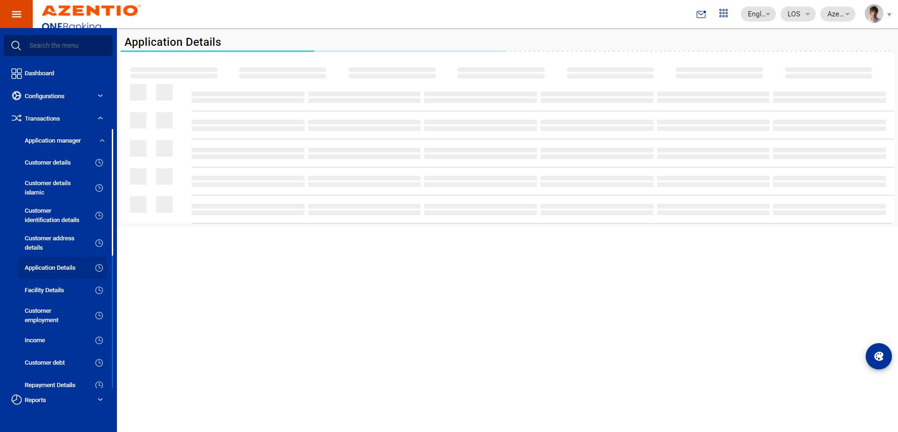Then Choose the dataset id to verify field when nature of employment is Salariedstepdefinitions.HooksClass.addScreenshot(io.cucumber.java.Scenario)screenshot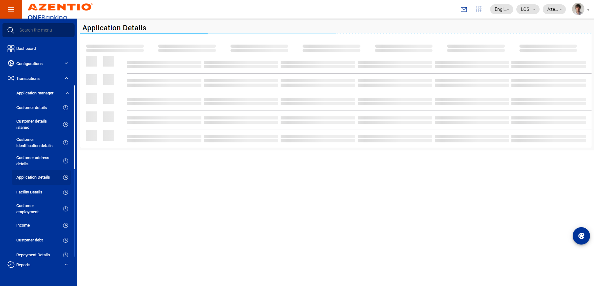Then Click the inbox in customer employmentstepdefinitions.HooksClass.addScreenshot(io.cucumber.java.Scenario)screenshot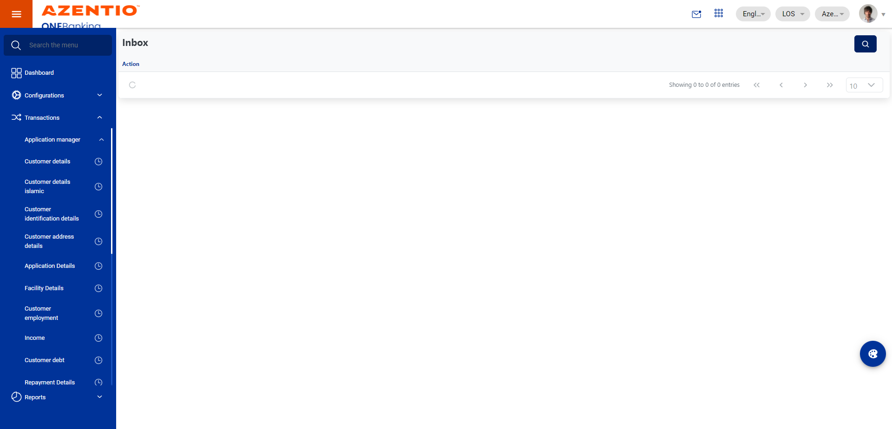And click the search button in customer employementstepdefinitions.HooksClass.addScreenshot(io.cucumber.java.Scenario)screenshot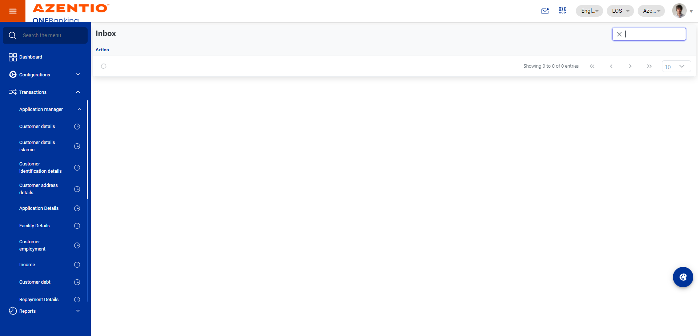Then Enter app data entry in the text barstepdefinitions.HooksClass.addScreenshot(io.cucumber.java.Scenario)screenshot And click the first action icon in customer employementstepdefinitions.HooksClass.addScreenshot(io.cucumber.java.Scenario)screenshot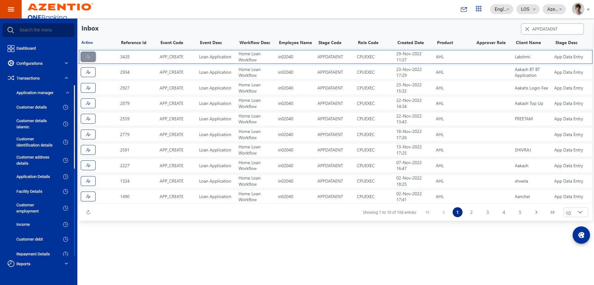Then Click the customer finanace tab in customer employmentstepdefinitions.HooksClass.addScreenshot(io.cucumber.java.Scenario)screenshot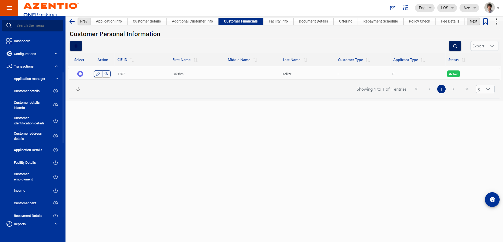And click the first edit icon in customer finance tabstepdefinitions.HooksClass.addScreenshot(io.cucumber.java.Scenario)screenshot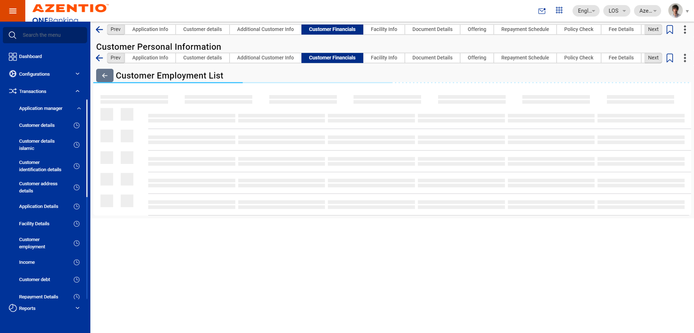Then click the add button in customer employment liststepdefinitions.HooksClass.addScreenshot(io.cucumber.java.Scenario)screenshot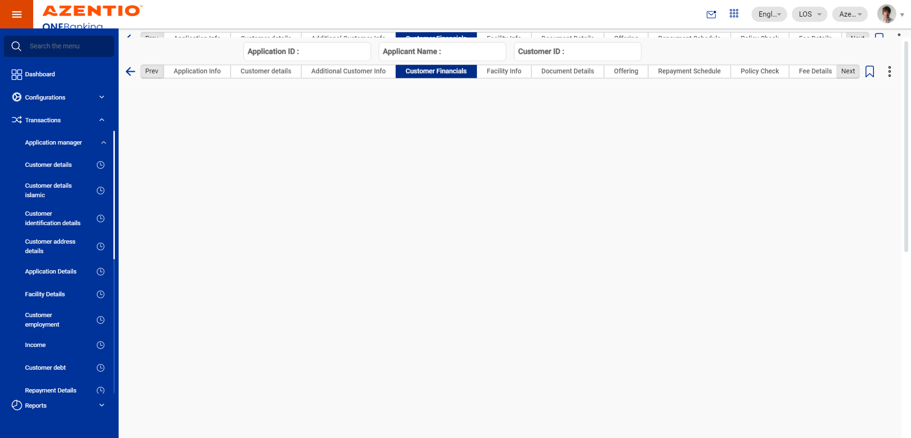And Verify the save and back button in customer employmentstepdefinitions.HooksClass.addScreenshot(io.cucumber.java.Scenario)screenshot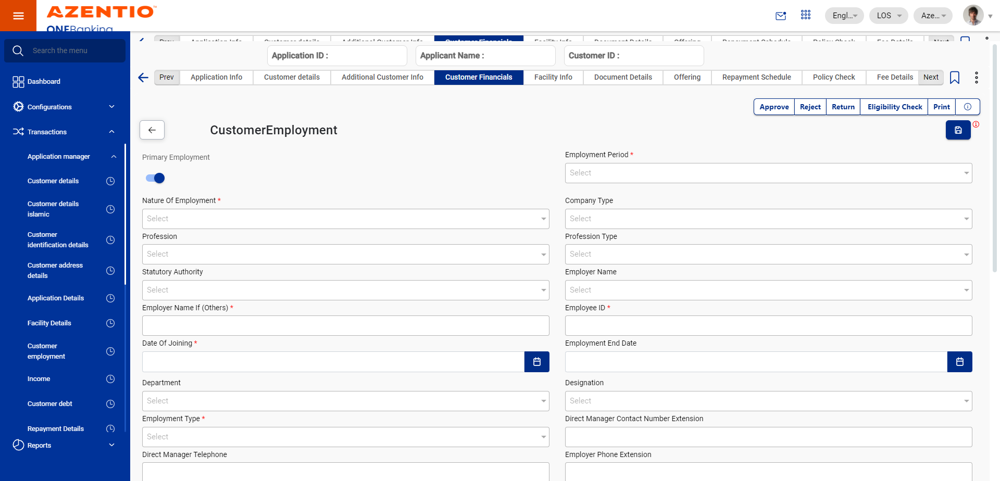And Fill the nature of employment as salaried in customer employmentstepdefinitions.HooksClass.addScreenshot(io.cucumber.java.Scenario)screenshot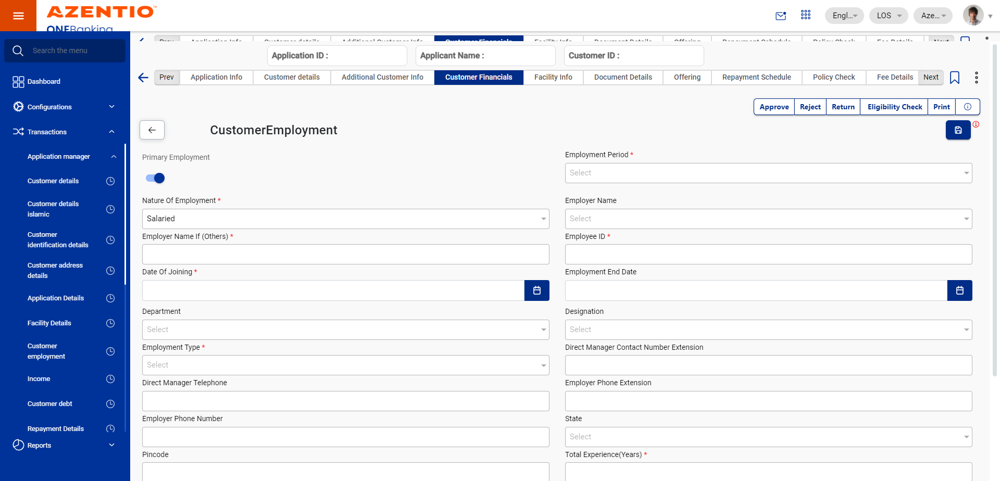Then choose the employment period and validate in customer employmentstepdefinitions.HooksClass.addScreenshot(io.cucumber.java.Scenario)screenshot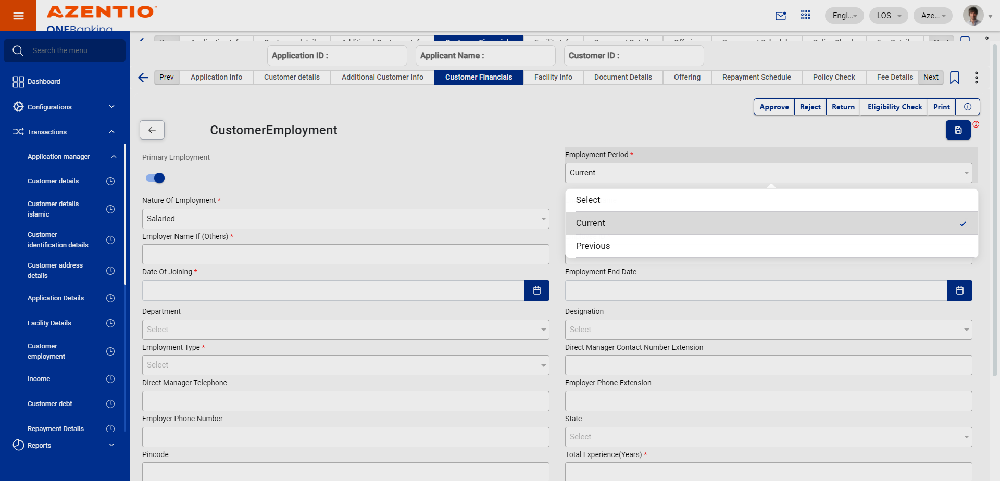And Fill the employer name and validate in customer employmentstepdefinitions.HooksClass.addScreenshot(io.cucumber.java.Scenario)screenshot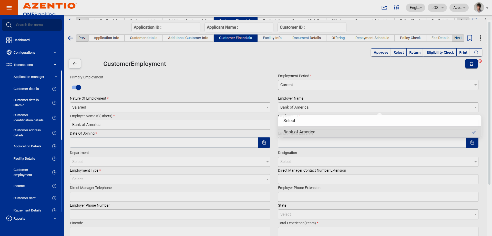And Fill and verify the field employer id in customer employmentstepdefinitions.HooksClass.addScreenshot(io.cucumber.java.Scenario)screenshotThen select and verify the field Date of Joining in customer employmentstepdefinitions.HooksClass.addScreenshot(io.cucumber.java.Scenario)screenshotAnd select and verify the field Employment End date in customer emplymentstepdefinitions.HooksClass.addScreenshot(io.cucumber.java.Scenario)screenshot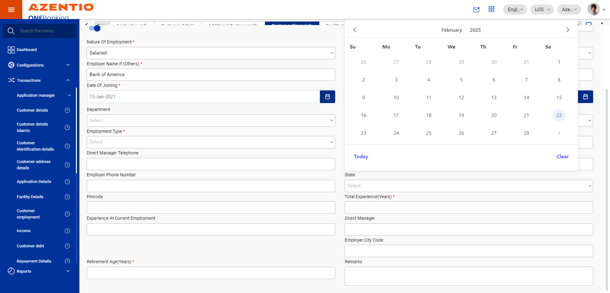Then select and verify the field Department in customer employmentstepdefinitions.HooksClass.addScreenshot(io.cucumber.java.Scenario)screenshot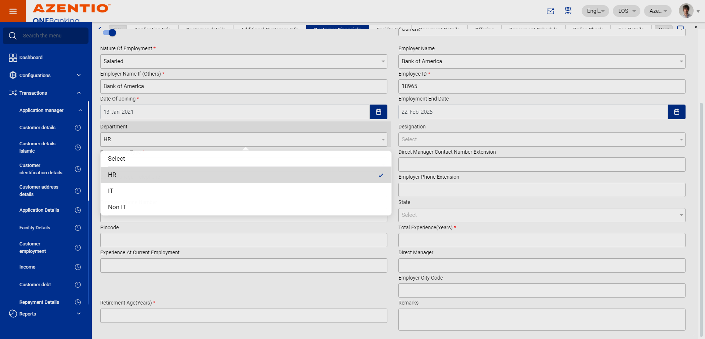And select and verify the field Designation in customer employmentstepdefinitions.HooksClass.addScreenshot(io.cucumber.java.Scenario)screenshot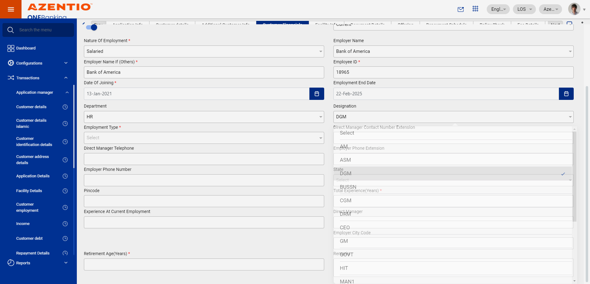Then select and verify the field employment type in customer employmentstepdefinitions.HooksClass.addScreenshot(io.cucumber.java.Scenario)screenshotAnd Fill and verify the field Direct Manager Contact Number Extension in customer employmentstepdefinitions.HooksClass.addScreenshot(io.cucumber.java.Scenario)screenshotAnd Fill and verify the field Direct Manager telephone in customer employmentstepdefinitions.HooksClass.addScreenshot(io.cucumber.java.Scenario)screenshotThen fill and verify the Employer Phone Number in customer employmentstepdefinitions.HooksClass.addScreenshot(io.cucumber.java.Scenario)screenshotThen fill and verify the field Employer City Code in customer employmentstepdefinitions.HooksClass.addScreenshot(io.cucumber.java.Scenario)screenshotThen fill and verify the field Employer Phone Extension in customer employmentstepdefinitions.HooksClass.addScreenshot(io.cucumber.java.Scenario)screenshotThen Fill and verify the field Total Experince Years in customer employmentstepdefinitions.HooksClass.addScreenshot(io.cucumber.java.Scenario)screenshotAnd select and verify the field Retirement Age in customer employmentstepdefinitions.HooksClass.addScreenshot(io.cucumber.java.Scenario)screenshotAnd Fill and verify the field Direct Manager in customer employmentstepdefinitions.HooksClass.addScreenshot(io.cucumber.java.Scenario)screenshotThen Fill the state in customer employmentstepdefinitions.HooksClass.addScreenshot(io.cucumber.java.Scenario)screenshotThen Fill the pincode in customer employmentstepdefinitions.HooksClass.addScreenshot(io.cucumber.java.Scenario)screenshotThen Fill the experience at current employment in customer employmentstepdefinitions.HooksClass.addScreenshot(io.cucumber.java.Scenario)screenshot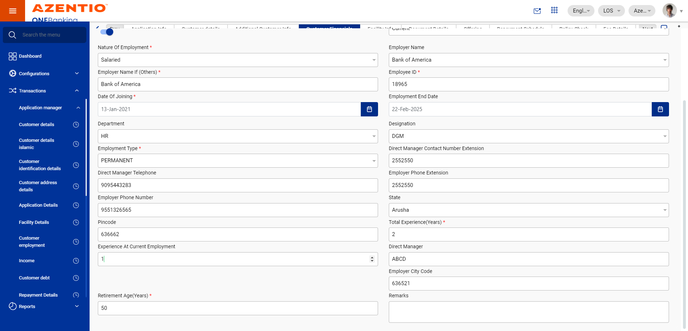Then save the record in customer employment as salariedstepdefinitions.HooksClass.addScreenshot(io.cucumber.java.Scenario)screenshot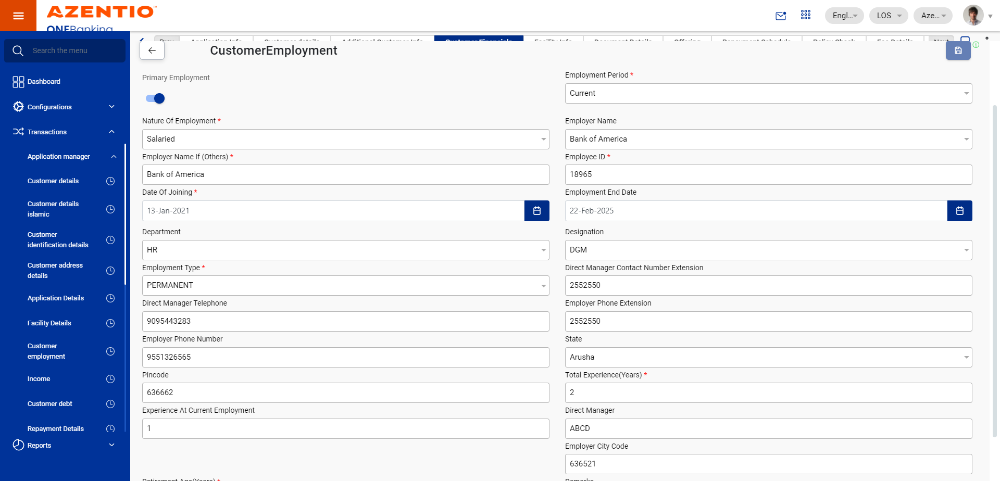FailTo verify fields when nature of employment is SalariedGiven Launch the kuls application and Navigate to Application details view liststepdefinitions.HooksClass.addScreenshot(io.cucumber.java.Scenario)screenshot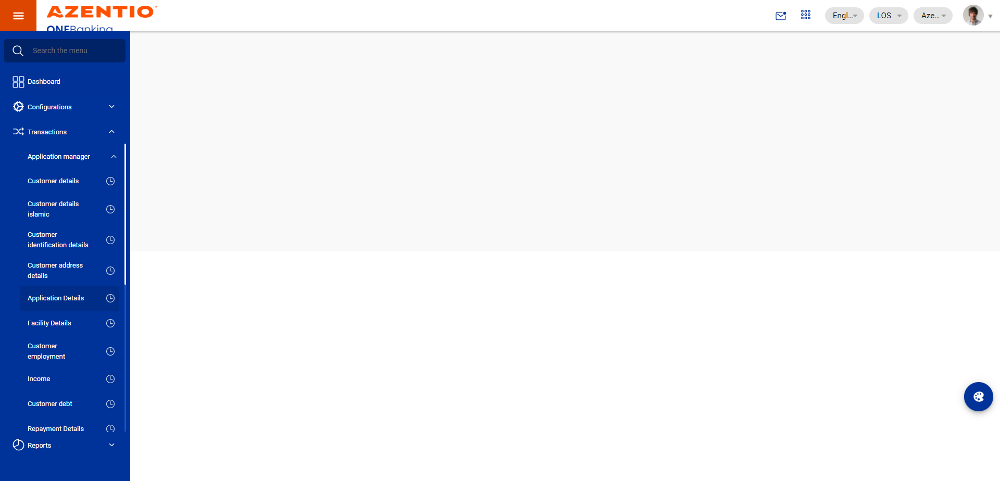Then Click the inbox in customer employmentstepdefinitions.HooksClass.addScreenshot(io.cucumber.java.Scenario)screenshotAnd click the search button in customer employementstepdefinitions.HooksClass.addScreenshot(io.cucumber.java.Scenario)screenshot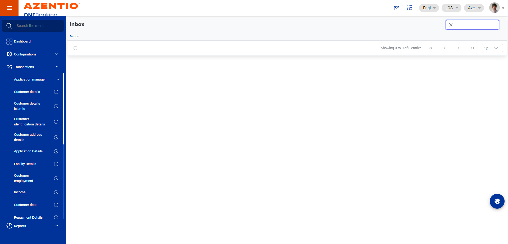Then Enter app data entry in the text barstepdefinitions.HooksClass.addScreenshot(io.cucumber.java.Scenario)screenshot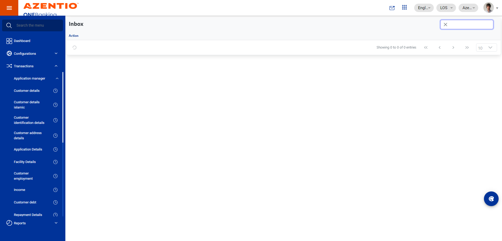And click the first action icon in customer employementStep skippedThen Click the customer finanace tab in customer employmentStep skippedAnd click the first edit icon in customer finance tabStep skippedThen click the add button in customer employment listStep skippedAnd Verify the save and back button in customer employmentStep skippedAnd Fill the nature of employment as salaried in customer employmentStep skippedThen choose the employment period and validate in customer employmentStep skippedAnd Fill the employer name and validate in customer employmentStep skippedAnd Fill and verify the field employer id in customer employmentStep skippedThen select and verify the field Date of Joining in customer employmentStep skippedAnd select and verify the field Employment End date in customer emplymentStep skippedThen select and verify the field Department in customer employmentStep skippedAnd select and verify the field Designation in customer employmentStep skippedThen select and verify the field employment type in customer employmentStep skippedAnd Fill and verify the field Direct Manager Contact Number Extension in customer employmentStep skippedAnd Fill and verify the field Direct Manager telephone in customer employmentStep skippedThen fill and verify the Employer Phone Number in customer employmentStep skippedThen fill and verify the field Employer City Code in customer employmentStep skippedThen fill and verify the field Employer Phone Extension in customer employmentStep skippedThen Fill and verify the field Total Experince Years in customer employmentStep skippedAnd select and verify the field Retirement Age in customer employmentStep skippedAnd Fill and verify the field Direct Manager in customer employmentStep skippedThen Fill the state in customer employmentStep skippedThen Fill the pincode in customer employmentStep skippedThen Fill the experience at current employment in customer employmentStep skippedThen save the record in customer employment as salariedStep skipped
And click the first action icon in customer employementstepdefinitions.HooksClass.addScreenshot(io.cucumber.java.Scenario)screenshot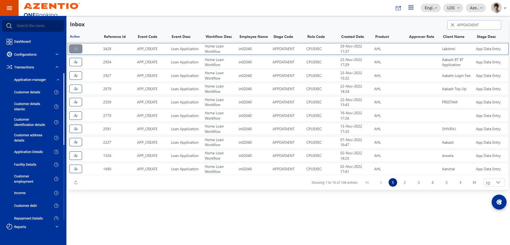Then Click the customer finanace tab in customer employmentstepdefinitions.HooksClass.addScreenshot(io.cucumber.java.Scenario)screenshot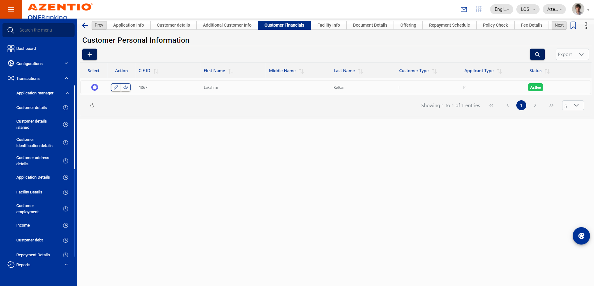And click the first edit icon in customer finance tabstepdefinitions.HooksClass.addScreenshot(io.cucumber.java.Scenario)screenshot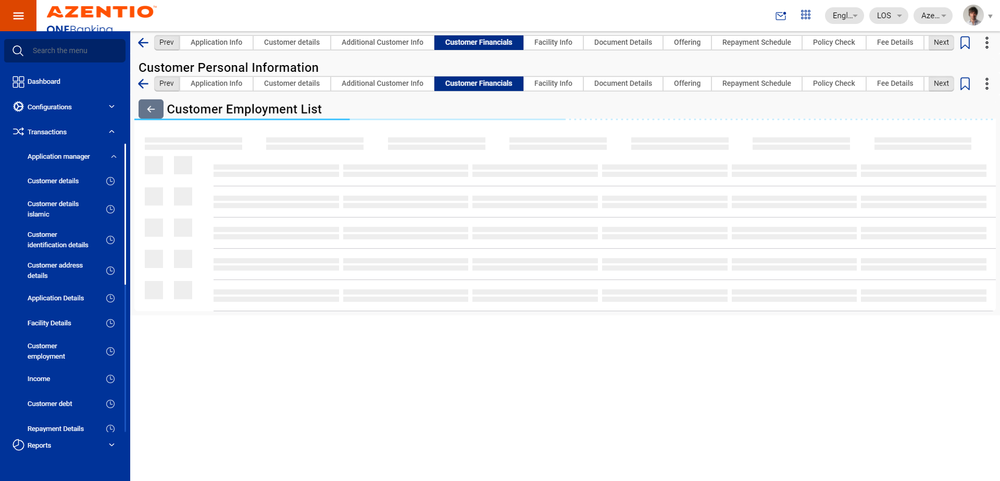Then click the add button in customer employment liststepdefinitions.HooksClass.addScreenshot(io.cucumber.java.Scenario)screenshot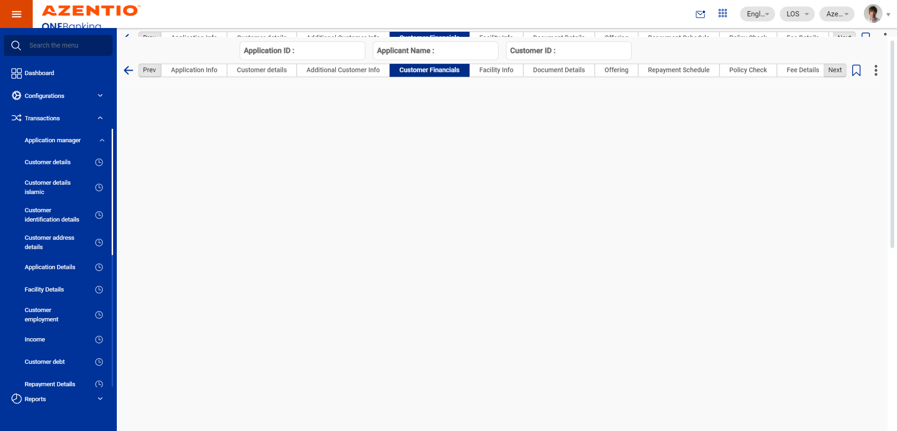And Verify the save and back button in customer employmentstepdefinitions.HooksClass.addScreenshot(io.cucumber.java.Scenario)screenshot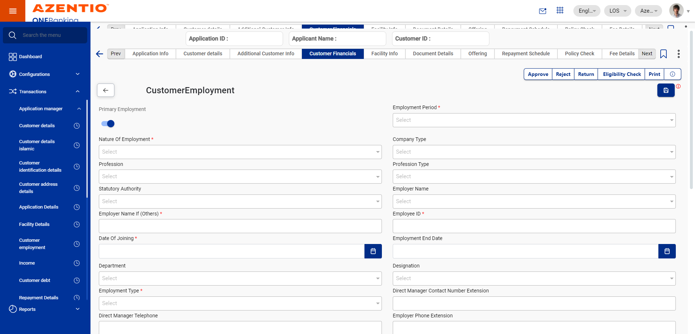And Fill the nature of employment as salaried in customer employmentstepdefinitions.HooksClass.addScreenshot(io.cucumber.java.Scenario)screenshot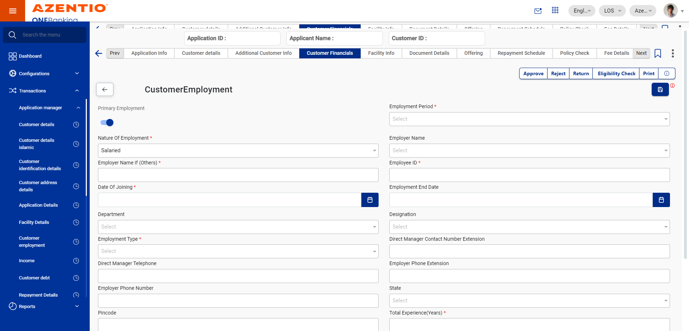Then choose the employment period and validate in customer employmentstepdefinitions.HooksClass.addScreenshot(io.cucumber.java.Scenario)screenshot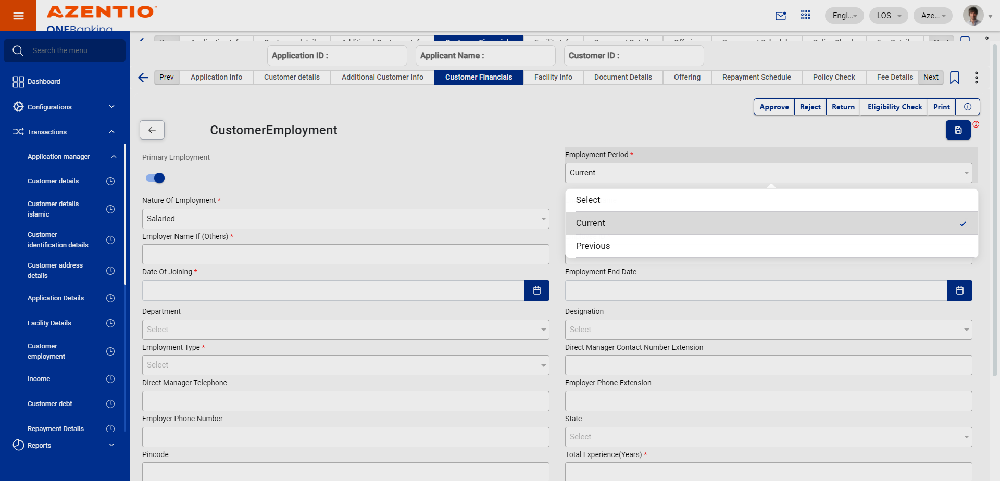And Fill the employer name and validate in customer employmentstepdefinitions.HooksClass.addScreenshot(io.cucumber.java.Scenario)screenshot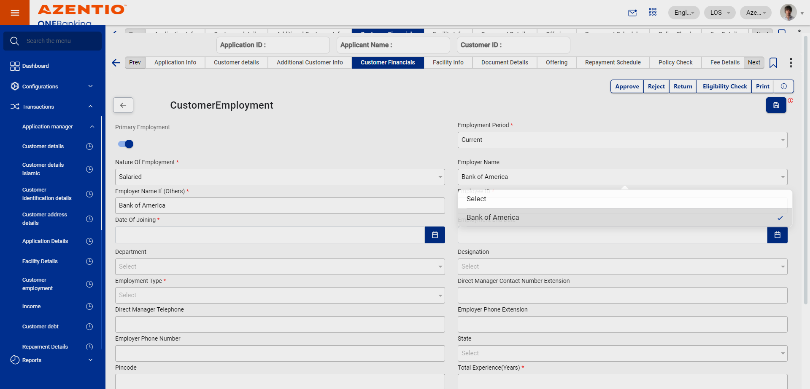And Fill and verify the field employer id in customer employmentstepdefinitions.HooksClass.addScreenshot(io.cucumber.java.Scenario)screenshotThen select and verify the field Date of Joining in customer employmentstepdefinitions.HooksClass.addScreenshot(io.cucumber.java.Scenario)screenshotAnd select and verify the field Employment End date in customer emplymentstepdefinitions.HooksClass.addScreenshot(io.cucumber.java.Scenario)screenshot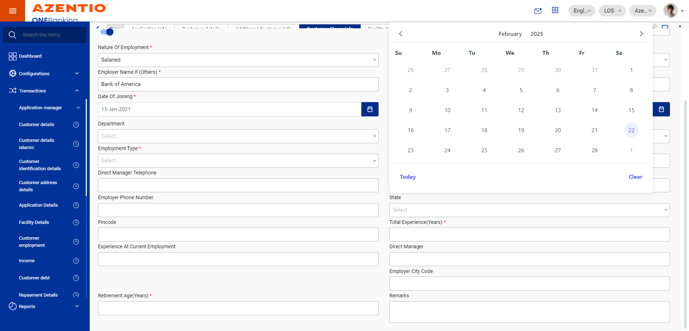Then select and verify the field Department in customer employmentstepdefinitions.HooksClass.addScreenshot(io.cucumber.java.Scenario)screenshot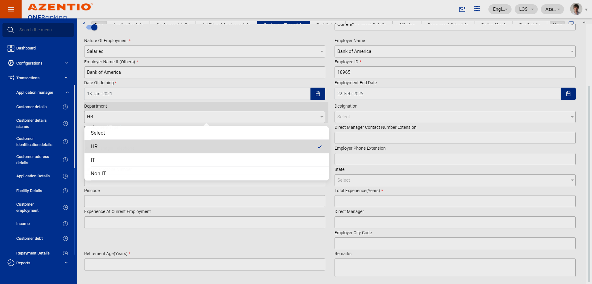And select and verify the field Designation in customer employmentstepdefinitions.HooksClass.addScreenshot(io.cucumber.java.Scenario)screenshot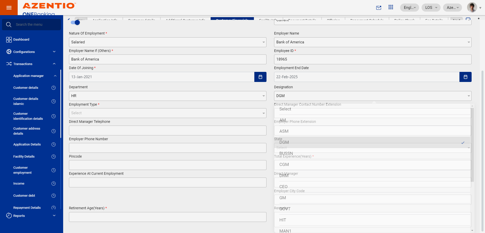Then select and verify the field employment type in customer employmentstepdefinitions.HooksClass.addScreenshot(io.cucumber.java.Scenario)screenshotAnd Fill and verify the field Direct Manager Contact Number Extension in customer employmentstepdefinitions.HooksClass.addScreenshot(io.cucumber.java.Scenario)screenshotAnd Fill and verify the field Direct Manager telephone in customer employmentstepdefinitions.HooksClass.addScreenshot(io.cucumber.java.Scenario)screenshotThen fill and verify the Employer Phone Number in customer employmentstepdefinitions.HooksClass.addScreenshot(io.cucumber.java.Scenario)screenshotThen fill and verify the field Employer City Code in customer employmentstepdefinitions.HooksClass.addScreenshot(io.cucumber.java.Scenario)screenshotThen fill and verify the field Employer Phone Extension in customer employmentstepdefinitions.HooksClass.addScreenshot(io.cucumber.java.Scenario)screenshotThen Fill and verify the field Total Experince Years in customer employmentstepdefinitions.HooksClass.addScreenshot(io.cucumber.java.Scenario)screenshotAnd select and verify the field Retirement Age in customer employmentstepdefinitions.HooksClass.addScreenshot(io.cucumber.java.Scenario)screenshotAnd Fill and verify the field Direct Manager in customer employmentstepdefinitions.HooksClass.addScreenshot(io.cucumber.java.Scenario)screenshotThen Fill the state in customer employmentstepdefinitions.HooksClass.addScreenshot(io.cucumber.java.Scenario)screenshotThen Fill the pincode in customer employmentstepdefinitions.HooksClass.addScreenshot(io.cucumber.java.Scenario)screenshotThen Fill the experience at current employment in customer employmentstepdefinitions.HooksClass.addScreenshot(io.cucumber.java.Scenario)screenshot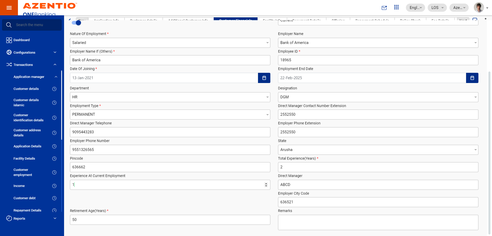Then save the record in customer employment as salariedstepdefinitions.HooksClass.addScreenshot(io.cucumber.java.Scenario)screenshot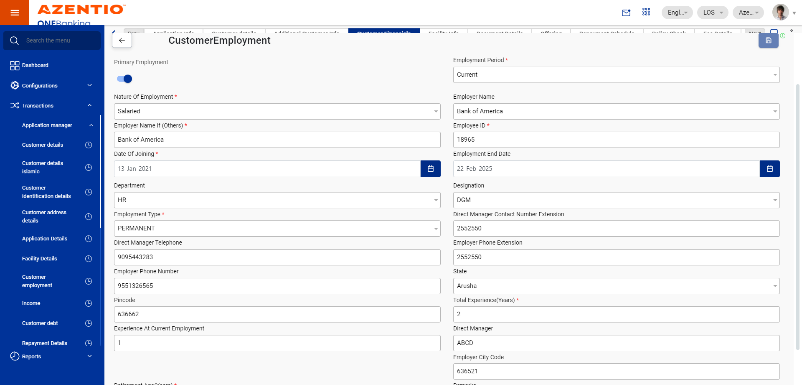FailTo verify fields when nature of employment is SalariedGiven Launch the kuls application and Navigate to Application details view liststepdefinitions.HooksClass.addScreenshot(io.cucumber.java.Scenario)screenshot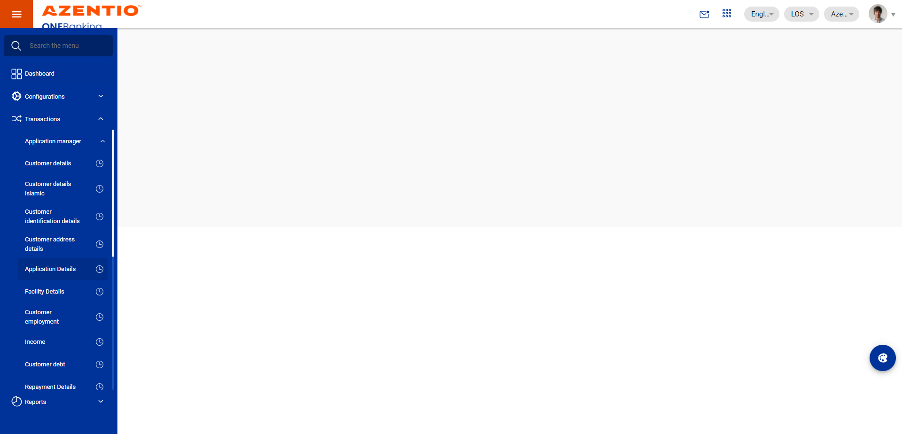Then Click the inbox in customer employmentstepdefinitions.HooksClass.addScreenshot(io.cucumber.java.Scenario)screenshotAnd click the search button in customer employementstepdefinitions.HooksClass.addScreenshot(io.cucumber.java.Scenario)screenshot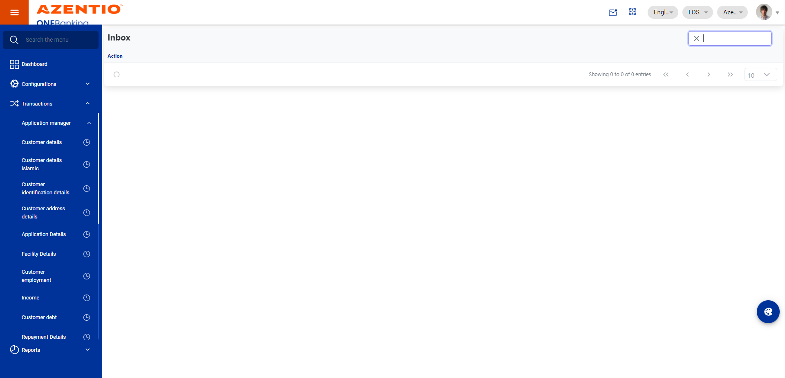Then Enter app data entry in the text barstepdefinitions.HooksClass.addScreenshot(io.cucumber.java.Scenario)screenshot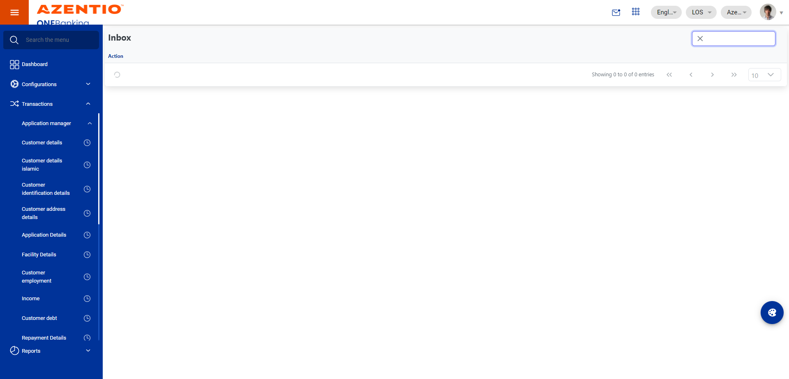And click the first action icon in customer employementStep skippedThen Click the customer finanace tab in customer employmentStep skippedAnd click the first edit icon in customer finance tabStep skippedThen click the add button in customer employment listStep skippedAnd Verify the save and back button in customer employmentStep skippedAnd Fill the nature of employment as salaried in customer employmentStep skippedThen choose the employment period and validate in customer employmentStep skippedAnd Fill the employer name and validate in customer employmentStep skippedAnd Fill and verify the field employer id in customer employmentStep skippedThen select and verify the field Date of Joining in customer employmentStep skippedAnd select and verify the field Employment End date in customer emplymentStep skippedThen select and verify the field Department in customer employmentStep skippedAnd select and verify the field Designation in customer employmentStep skippedThen select and verify the field employment type in customer employmentStep skippedAnd Fill and verify the field Direct Manager Contact Number Extension in customer employmentStep skippedAnd Fill and verify the field Direct Manager telephone in customer employmentStep skippedThen fill and verify the Employer Phone Number in customer employmentStep skippedThen fill and verify the field Employer City Code in customer employmentStep skippedThen fill and verify the field Employer Phone Extension in customer employmentStep skippedThen Fill and verify the field Total Experince Years in customer employmentStep skippedAnd select and verify the field Retirement Age in customer employmentStep skippedAnd Fill and verify the field Direct Manager in customer employmentStep skippedThen Fill the state in customer employmentStep skippedThen Fill the pincode in customer employmentStep skippedThen Fill the experience at current employment in customer employmentStep skippedThen save the record in customer employment as salariedStep skipped
Started
Nov 29, 2022 02:08:19 PM
Ended
Nov 29, 2022 02:11:08 PM
Features Passed
0
Features Failed
1
Features
Scenarios
Steps
Timeline
Tags
| Name | Passed | Failed | Skipped | Others | Passed % |
|---|---|---|---|---|---|
| @CustomerEmployment_M1 | 1 | 1 | 0 | 0 | 50% |
System/Environment
| Name | Value |
|---|---|
| version | 10 |
| os | windows |
-
@CustomerEmployment_M1
2 tests
@CustomerEmployment_M1
1 passed 1 failedStatus Timestamp TestName Pass 14:08:20 PM To verify fields when nature of employment is Salaried To Verify the fuctionalities of Customer Employment.To verify fields when nature of employment is SalariedFail 14:09:50 PM To verify fields when nature of employment is Salaried To Verify the fuctionalities of Customer Employment.To verify fields when nature of employment is Salaried
-
java.lang.NullPointerException
1 tests
java.lang.NullPointerException
1 failedStatus Timestamp TestName Fail 14:11:07 PM Then Enter app data entry in the text bar To Verify the fuctionalities of Customer Employment.To verify fields when nature of employment is Salaried.Then Enter app data entry in the text bar